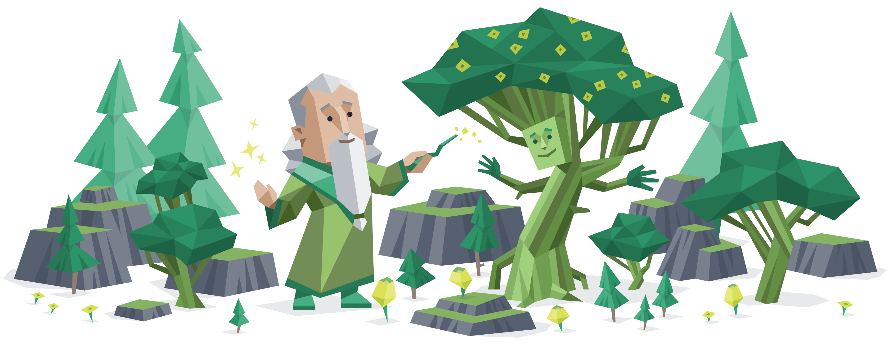
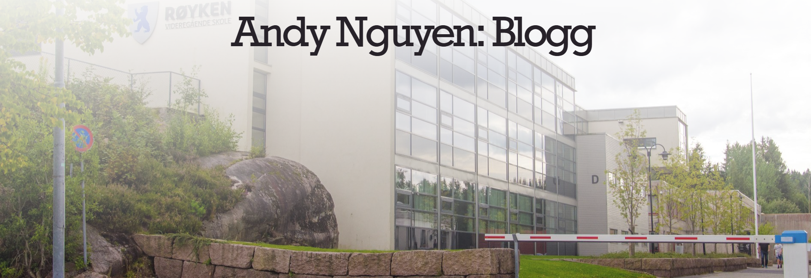
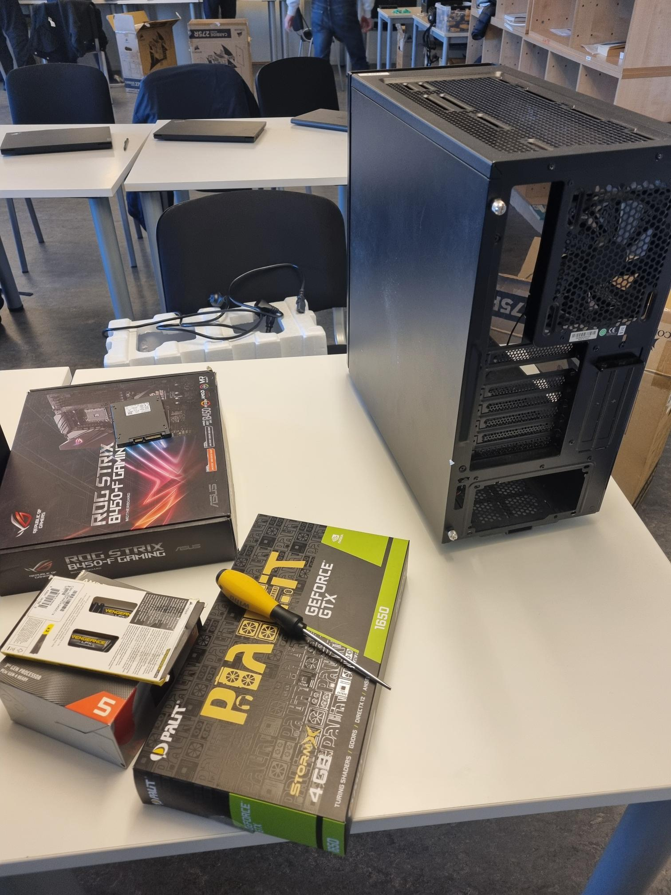
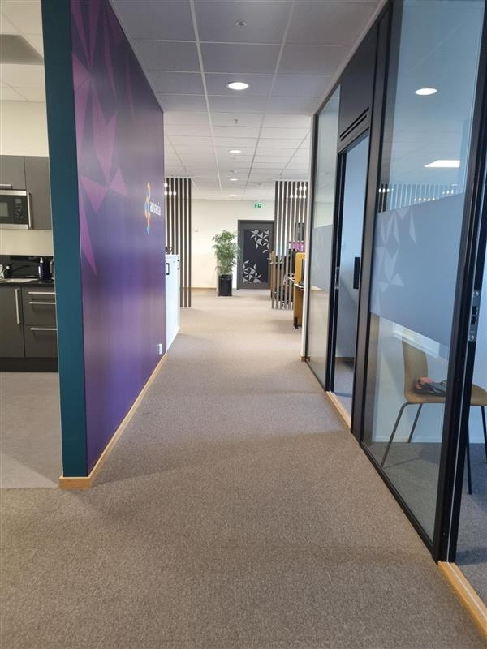

Yrkesfaglig fordypning
Yrkesfaglig fordypning er en av de primær fagene vi har på første året Informasjonsteknologi og medieproduksjon, som innebærer mest om opplevelsen av arbeidslivet, arbeidsmiljøen og framtiden. I denne faget, var vår utplassering til bedrifter en stort del av undervisningen vår.
Øvelse i CV og søknad
Vi startet vår første emne i YFF ved å øve med å skrive CV og søknad til eksempel virksomheter. Viktige punkter blant denne arbeidet var å liste fram viktige ferdigheter/personlige evner til å forbedre sjansen av å bli vurdert bedre.
Vi også tok en personlighets test, der jeg fikk resultatet av å være en INFJ (Advocate) som legger i vekt med å være: empatiske, kreative, omsorgsfulle og idealistiske.

Blogg
Vi jobbet med å skrive en blogg som forteller om de ulike opplevelsene våres og erfaring vi fått under YFF timene.
Vi også la til en innlegg hver dag på bloggen underveis vår utplassering i ukene 10 og 12. (2025)
Link til bloggen vil ligge her om du vil få mer oversikt over hva vi lærte underveis alle YFF-timene. Bloggen min.

Prosjektuke (Uke 47)
I uket 47 (2024) Jobbet vi hele uket med å sette opp en PC, med deler fordelt til oss av skolen sitt utstyr. Dette prosjektet ville vi gjøre selvstendighet, og dermed kunne få kunnskap og kompentanse ifølge dokumentasjon på nettet.
Noen utfordringer blant denne prosjektuken gikk utover å klare å sette PC-en på. Mange fikk ulike feil, der mange tenkte det var Motherboard feil, CPU, RAM eller selve ledningene. Heldigvis for meg, var utfordringen min fikset ifølge å sette RAM-brikkene ordentlig inn.
Til slutt, etter at alle klarte å sette PC-ene på, spilte vi CS:GO ved bruk av LAN (Lokalt nettverk) og hadde en koselig konklusjon.

Utplassering - Ukene 10-12
Etter prosjektuken, ville vi i ukene 50 framover til uke 10, jobbe med å skaffe oss praksisplass hos en bedrift som jobber primært med IT.
Det var en utfordring til å skaffe meg praksisplass. Det tok over 40+ søknader til å endelig få en treff blant mange avslag. Dermed, fikk jeg en koselig og lærerikt opplevelse hos Advania. I Prosjekt feltet på Vitae, vil det fortelle hva jeg drev enkelt forklart, og på bloggen, vil det fortelle i detalje hvordan min opplevelse var på Advania over de tre ukene vi var utplassert. Bloggen min.
